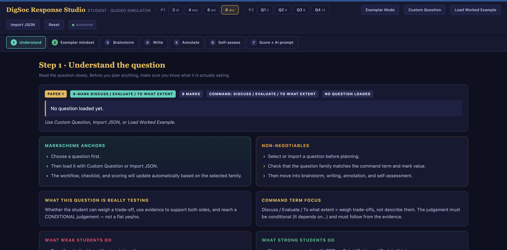
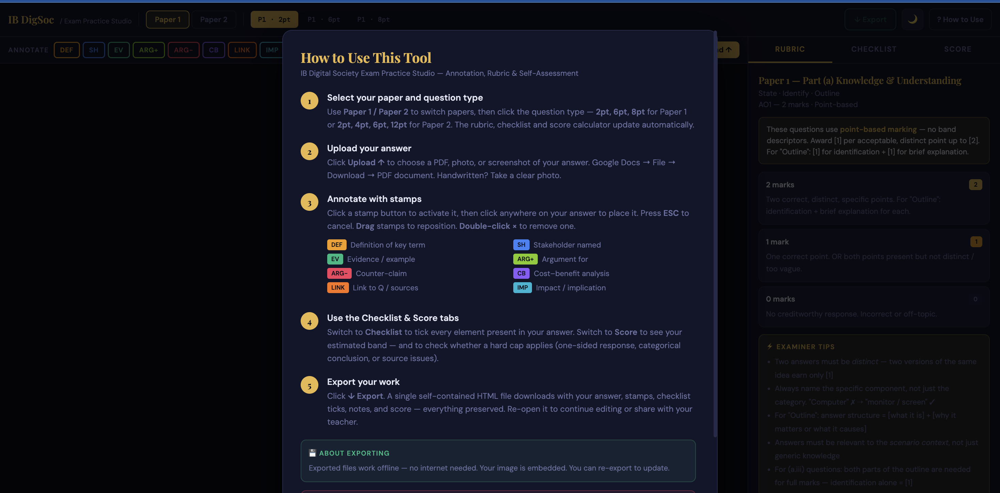

Let me be completely clear about my technical background before this post begins: I am not a programmer. I took one computer science class in 2003, I cannot write JavaScript from scratch, and until about eight months ago the words "CSS grid" meant nothing to me. I am a high school teacher who coaches basketball and runs a media program in Halifax.
That's context, not humility. Because what I built this spring should not have been possible for someone with my background — and the fact that it was possible is the actual point of this post.
My IB Digital Society students were preparing for their May exams. I wanted a self-assessment tool that worked the way I think about exam prep: structured steps, real rubric language, a place to plan before writing, and a way to annotate your own response to see what you've actually argued. Nothing like that existed. So I decided to build it.
I ended up building two.
What I Actually Built
The first tool — the one I started with — is called the IB DigSoc Exam Practice Studio. It's a single HTML file that runs entirely in the browser, no server needed. You select your paper type (Paper 1 or Paper 2) and the mark value of the question you're practicing. The app shows you the official IB rubric for that question type, a checklist of what a high-scoring response actually needs, an annotation system where you can stamp different parts of your written response with labels (DEF, EV, ARG+, ARG−, etc.), and a score estimator that updates as you tick off checklist items. When you're done, you can export the whole thing — your answer, your stamps, your checklist state — as a single file you can email to your teacher.
IB DigSoc Exam Practice Studio — What It Does
Upload a PDF or photo of your written response. Annotate it with colour-coded stamps. Work through the official rubric. Get a provisional band estimate. Export everything to share with your teacher.

The second tool — which I built after the first one and is considerably more complex — is the DigSoc Response Studio. This one walks students through a seven-step process: understand the question, think like a high-scoring student, brainstorm before writing, write the full response, annotate it with inline text highlights, self-assess against the rubric, and then generate a tailored AI feedback prompt they can paste into Claude or ChatGPT. It covers every question type across Paper 1 and Paper 2, with specific rubric logic, checklists, and exemplar guidance for each. It also has a demo mode that loads a full worked example — a real IB-style question on Instagram and social class — with a complete model response, annotations already placed, and a checklist that shows exactly why the response hits the top band.
DigSoc Response Studio — What It Does
A guided 7-step simulator covering every Paper 1 and Paper 2 question type. Brainstorm scaffold, inline annotation, rubric self-assessment, score estimate with hard caps, and a copy-ready AI feedback prompt.

Both tools run entirely in the browser as single HTML files. No login, no server, no subscription, no data sent anywhere. A student can open one on a Chromebook in a school with no internet and it still works. That was non-negotiable for me.
How It Actually Gets Built: The Process
This is what most posts about "vibe coding" skip. They say "I just chatted with AI and it wrote the code!" as if the hard part is typing. The hard part is not typing. The hard part is knowing what to ask for and knowing when to push back.
Here's the actual process I used, which you could replicate for almost any kind of tool you want to build as an educator:
Start with the problem, not the feature list
My first prompt was not "build me an IB exam tool." My first prompt was something closer to: "My IB Digital Society students consistently get to an exam and don't know the difference between describing something and analysing it. They write, they self-assess that it's good, and they're wrong. What's the root problem here and what would a tool need to do to fix it?"
That conversation — not a coding session, just a thinking session — produced the architecture. The tool needed: step-based flow so students can't skip the thinking phase, specific rubric language from the actual markbands, a way to visually locate where in their writing the evidence actually is, and a score that feels real because it's driven by the rubric, not vibes. Everything after that was building toward those four things.
Build the content before you build the code
The rubric data — the official markband language for each of the eight question types, the non-negotiables, the examiner tips, the things weak students do versus what strong students do — I drafted all of that in a document first. I knew the subject. I could look at my IB resources and write those tables. Once that content existed, asking the AI to turn it into a working application was a much simpler conversation than asking it to invent both at once.
This is something I'd tell any teacher trying this: you have domain knowledge that the AI doesn't have. You know what your students get wrong. You know what the rubric is actually asking for. You know what a good response looks like versus a mediocre one. That expertise is the most valuable thing in the room. The AI is the implementation layer, not the expertise layer.
Describe behavior, not syntax
I cannot tell an AI to "add an event listener to the textarea that fires a debounced save to localStorage." I don't know those words. What I can say is: "When a student types in the brainstorm field, their work should save automatically — they should never lose their text if the tab closes." The AI translates that into code. My job is to describe the behavior with enough precision that the translation is accurate.
You don't need to know how to code. You need to know how to describe what you want with precision. Those are very different skills, and you probably already have the second one.
Precision matters a lot. "Make it look better" gets you nothing useful. "The score estimate should update immediately when a checkbox is ticked — not on page load, not on submit — instantly" gets you what you want.
8 Vibe Coding Tips That Actually Matter in June 2026
A lot of what's written about AI-assisted coding is either breathlessly optimistic or uselessly vague. Here's what I actually found useful across the process of building these two tools:
One file as long as possible
Both tools are single HTML files. CSS, JavaScript, data — all inline. This is not best practice for production software. It is excellent practice for a teacher building tools for students. No build process, no dependencies, no "npm install", no deployment infrastructure. You open the file in a browser and it works. Keep it in one file for as long as you possibly can. The complexity cost of splitting files into modules is real, and you will pay it before you understand what you're managing.
CSS variables are your design system
Before you write a single UI element, define your colour palette and font stack as CSS custom properties at the top of your file. Something like --navy: #0d1b2e; --teal: #0ea5a0; --gold: #E8B84B. Then use those variable names everywhere instead of hex codes. When you ask the AI to "make the checklist items look checked when ticked," it can use your variable names and the output is instantly consistent. This saved me hours of "why does that green not match."
Tell the AI what constraints matter to you
Every time I started a new feature, I led with my non-negotiables: no external dependencies, works offline, no data sent to any server, functions on a Chromebook. The AI made different choices when it knew those constraints existed. Without them, it would sometimes suggest fetching data from an API, using a framework, or requiring an internet connection. Constraints are not limitations — they're a specification.
Version as you go — even casually
I am not a git user. But I learned very quickly to Save As "tool-v2.html", "tool-v3.html" before any significant change. Three times, a new feature broke something I didn't notice until ten minutes of new code later. Being able to open the previous version side-by-side and compare was the only way to recover cleanly. If you know git, use it. If you don't, just make numbered copies before big changes.
Ask the AI to explain before it codes
Before I asked for any non-trivial feature, I asked: "Before you write any code, explain in plain language how you would approach this." That explanation gave me two things: a chance to correct the approach before it was embedded in a hundred lines of code, and enough understanding of the plan to catch it when the implementation drifted from what I'd asked for. This one habit saved me more time than any other.
The AI will write confident, working code for the wrong problem
This is the most important failure mode to understand. The AI is very good at writing correct code. It is not always good at writing code for what you actually need. I asked for a "score estimator" and got one that worked perfectly — but it calculated the score on page load, not when checkboxes were ticked. Technically correct, practically useless. Read the output. Run it. Check whether it does what you meant, not just what you typed.
Keep your data separate from your UI logic
In both my tools, the rubric content — the band descriptors, the checklists, the examiner tips — lives in a JavaScript data object at the top of the file, completely separate from the rendering functions. This was the AI's suggestion, and it was the right one. When I needed to update a rubric item, I changed one line of data. When I needed to add a new question type, I added one object. The UI didn't need to change. Separating your content from your presentation is the most practical architectural decision you can make for a tool like this.
Ship something small, then make it better
The first version of the Practice Studio had three features: upload a file, place stamps, see the rubric. That was it. I used it with students for a week before adding the score tab. I used it for two more weeks before building the export. Each addition was informed by what students actually got confused about. If I had tried to build everything before anyone used it, I would have built a lot of wrong things very carefully. Start smaller than you think you need to.
What Surprised Me About the Process
I expected the hardest part to be the code. It wasn't. The hardest part was writing the content — the rubric language, the examiner tips, the checklist items that are specific enough to be genuinely useful but general enough to apply to any question in the paper. That took domain knowledge, experience with where my students struggle, and careful thinking about what the IB is actually trying to assess at each mark level. The AI helped me refine the language, but the substance came from me.
The other thing that surprised me was how much I enjoyed the process of building. I've never thought of myself as someone who makes software. But there's something satisfying about describing a problem clearly and watching a working solution appear — especially when you can open it, hand it to a student the next morning, and see them actually use it.
The annotation feature in the Response Studio — where students highlight text in their own response and tag it with a stamp — took about twenty minutes of back-and-forth to get right. The export system that embeds everything into a self-contained HTML file took an afternoon. Neither of those things would have been possible for me without AI. Both of them are now genuinely useful in my classroom.
What It Means for Teachers
I want to be careful not to oversell this. These tools work for my students because I understand my students, my subject, and the exam they're preparing for. An AI could not have built them without me. But I also could not have built them without the AI.
What's changed is not that coding is easy now. What's changed is that the implementation gap — the distance between "I know what this tool should do" and "this tool exists" — has shrunk dramatically for people who have subject expertise but not technical expertise. That's most teachers. That's almost all of us.
The skills that matter now are: being able to describe what you want with precision, knowing your subject deeply enough to build something that's actually useful, and being willing to iterate — to use the tool with students, see where it fails, and make it better. Those are things teachers already know how to do. The AI handles the rest.
If you've been sitting on an idea for a tool, a resource, a practice simulator, a self-assessment rubric, or anything else that would help your students — now is actually the time to build it.
Want to try the tools?
Both the IB DigSoc Exam Practice Studio and the DigSoc Response Studio are available as free downloads. They work offline as single HTML files — no login, no account, no data collection. Email me at chad.aigroove@gmail.com and I'll send them along. If you're an IB Digital Society teacher and want to adapt them for your context, I'm happy to talk through how.